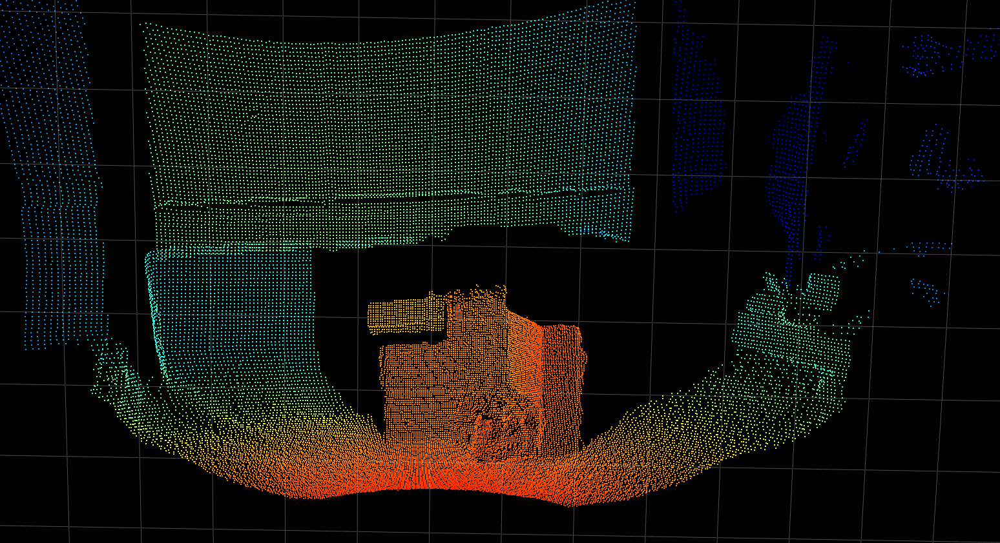

Minimum Amplitude
Abstract
The Minimum amplitude (diParam.minAmplitude) parameter invalidates pixels where the amplitude (reflected light) drops below the minimum threshold.
Description
For each pixel, the amplitude value represents how much light was received by the imager. The minimum amplitude parameter provides a threshold that defines when the system should discard low amplitude pixels. The images below show the amplitude image and the point cloud for a scene containing black totes, which are made out of a dark plastic and reflect very little light. Part of the point cloud is missing where the amplitude is below the threshold.
Amplitude image |
Point cloud |
|---|---|
|
|


Now, let’s see what happens when we change this threshold value. In the table below, we display the same scene measured with different amplitude thresholds. With a value of zero, we can compute the point cloud for the very dark areas. When we increase the threshold to 50, a large part of the point cloud is lost.
Minimum amplitude |
Point cloud |
|---|---|
0 |
 |
20 |
|
50 |
|

In certain cases, such as when black objects are in the field-of-view, changing the default value from 20 to zero can be beneficial because more pixels are valid, leading to a more complete point cloud. Generally speaking, lowering the amplitude leads to more ambient noise and less accuracy in the distance measurement. In this case, we encourage you to test the filters available with the O3R to mitigate the noise from black objects measurements.
Note: black objects in the visible spectrum are not necessarily black in the near infrared range.
Note: The minimum amplitude threshold is applied to the non-normalized amplitude image. The numerical value of the normalized amplitude image might not correspond to expected values with the set threshold. The normalization factor used in our algorithm is accessible as part of the PCIC output and called
ampNormalizationFactor.